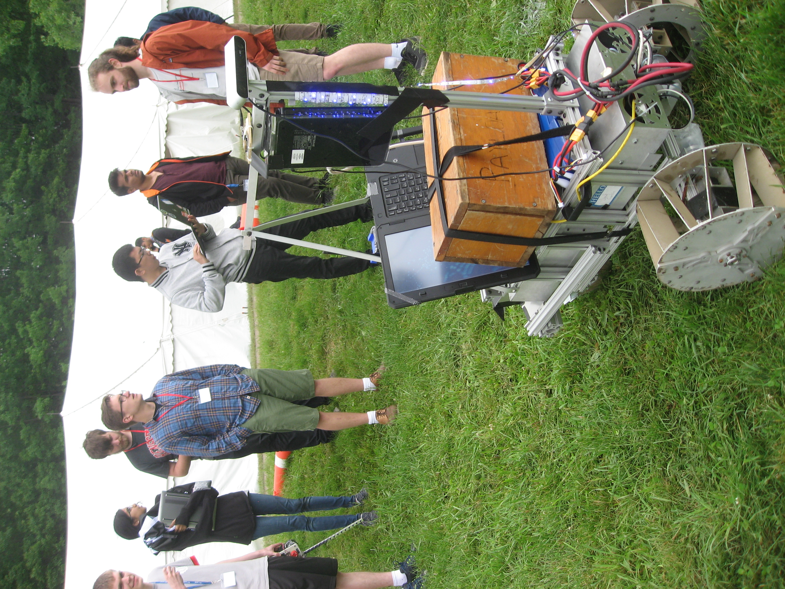
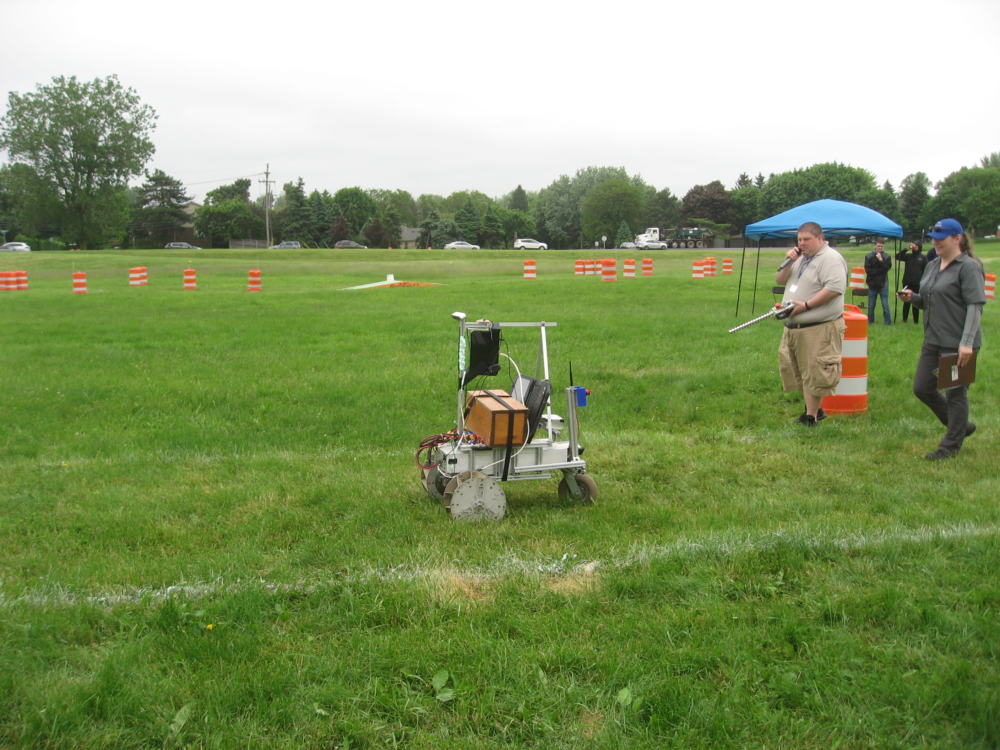

Autonomous robots
I was heavily involved with RPI's premier robotics team, the Rock Raiders. I primairly worked on a software companion simulator, localization, vision, and hardware device integration (sensors, motor drivers). I also did electrical and mechanical work here-and-there.
Waiting for our turn to compete. The wood box is a 30lb weight robots are required to carry around while competing.

The rear of the robot. Not too much going on.
It started raining, so we did a speedy waterproofing. Rockie was driving autonomously in this video.
A competition run. A judge is holding the wireless emergency stop in the brackground.
An early test of autonomously driving to a GPS coordinate. It looks like the local planner probably needed tuning.
An earlier incarnation of Rockie, before we switched from URC to IGVC. Note the arm and rocker suspension, both of which were not needed for IGVC. This driving was under remote control, autonomoy wasn't functional on hardware yet.